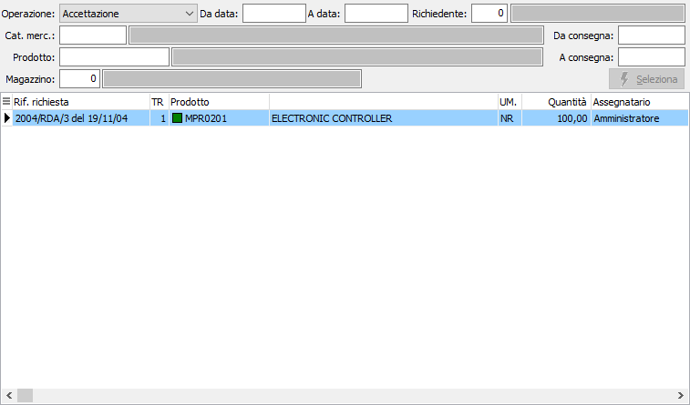
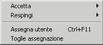
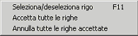
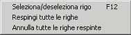

Accettazione richieste di acquisto
La procedura consente, da parte del responsabile dell'ufficio acquisti, di accettare o rifiutare le righe di richieste di acquisto proposte dall'ufficio produzione e renderle disponibili per le operazioni successive di generazione ordini fornitori. La procedura consente anche di annullare l'accettazione delle richieste.

OPERAZIONE: indica l'operazione da effettuare: accettazione oppure annullamento dell'accettazione.
DA DATA: indica la data con cui iniziare la selezione delle richieste per effettuare l'operazione selezionata.
A DATA: indica la data con cui terminare la selezione delle richieste per effettuare l'operazione selezionata.
RICHIEDENTE: indica il codice dell'utente che ha presentato la richiesta da utilizzare per la selezione dei documenti. Sul campo sono disponibili le funzioni di ricerca (F9) sulla tabella stessa.
CATEGORIA MERCEOLOGICA: indica il codice della categoria merceologica da utilizzare per la selezione delle richieste. Sul campo sono disponibili le funzioni di ricerca (F9) sulla tabella stessa.
PRODOTTO: indica il codice del prodotto da utilizzare per la selezione delle richieste. Sul campo sono disponibili le funzioni di ricerca (F9) sulla tabella stessa.
MAGAZZINO: indica il codice del magazzino da utilizzare per la selezione delle richieste. Sul campo sono disponibili le funzioni di ricerca (F9) sulla tabella stessa.
DA CONSEGNA: indica la data di consegna con cui iniziare la selezione delle richieste per effettuare l'operazione selezionata.
A CONSEGNA: indica la data di consegna con cui terminare la selezione delle richieste per effettuare l'operazione selezionata.

La pressione del pulsante Selezione determina la ricerca delle righe di richiesta che saranno riportati nella griglia sottostante. L'utente può selezionare o deselezionare le richieste da accettare tramite il doppio clic del mouse, il
tasto F11 o mediante il menù riportato a lato richiamabile con il pulsante destro del mouse. Per respingere un rigo è necessario comunque utilizzare il menù del pulsante
destro del mouse oppure il tasto F12. Da questa sezione è possibile anche effettuare l'assegnazione di un rigo accettato, durante la fase di accettazione stessa sempre utilizzando il menù del pulsante destro del mouse.Al termine della selezione tramite la pressione del pulsante Salva sulla toolbar o del tasto F10 viene effettuato il salvataggio dei dati.